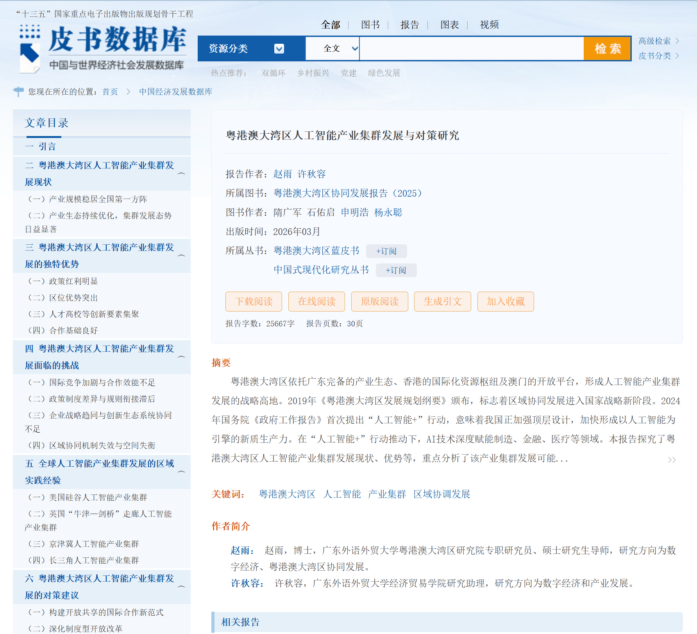
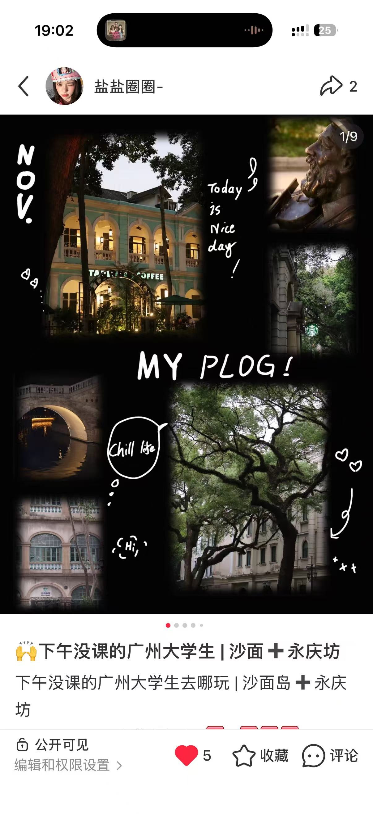
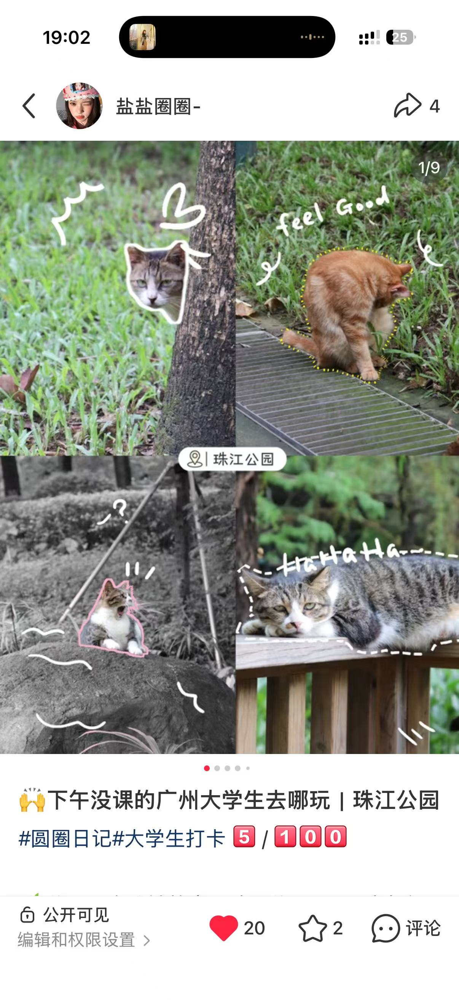
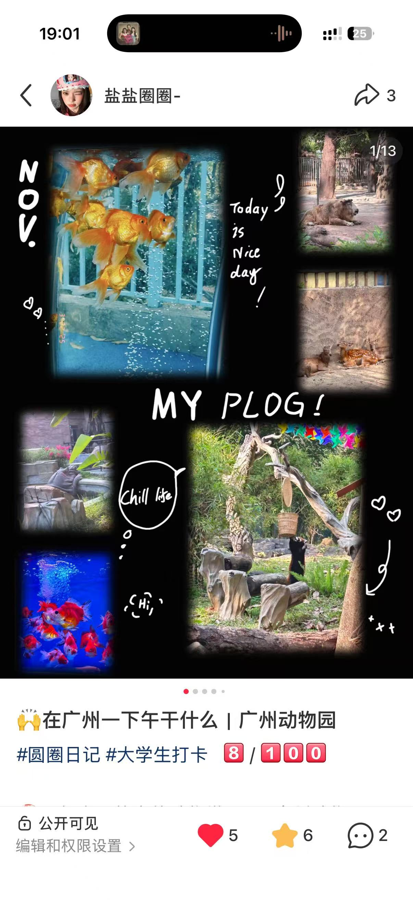

2026.07 — 2026.09
美的集团股份有限公司
中国区域事业部｜市场推广运营
11家门店走访
81.24万单场直播曝光
5.13万国补订单
7h → 0.5–2h单日处理时长
PORTFOLIO · 2026
市场分析 × 数据研究 × 项目协同
广东外语外贸大学经济学专业
保持好奇，探索自己的职业方向 ing...
01 / EXPERIENCE
从世界五百强企业到国家级展会，从内容平台到金融与公共服务。方向不完全相同，但每段经历都让我更快理解业务、识别问题并推动落地。
2026.07 — 2026.09
中国区域事业部｜市场推广运营
2025.09 — 2025.11
广交会 VIP 贵宾俱乐部｜B区组长
2025.06 — 2025.09
内容运营｜奇瑞相关项目
2025.01 — 2025.04
人力资源部｜实习生
2024.07 — 2024.08
税费监管组｜实习生
02 / SELECTED WORK
从跨境电商到文化消费，围绕市场、用户与传播问题形成可执行的分析结论。
DIGITAL TRADE · 数字贸易大赛
围绕 Amazon 女装与男鞋市场，整理行业、商品与用户评价数据，使用 Excel、BI 工具分析市场规模、竞争格局与消费者偏好，完成 4 份市场报告及运营策略。
ZHENGDA CUP × 经世者
同一研究项目在两项赛事中迭代验证：抓取 9000+ 条评论，结合 400 份问卷、PLS-SEM 与 LDA，完成 68 页报告和 90+ 张分析图。
FAVE PLAN · 用户研究
面向高校在校生，围绕人才培养、职业规划、人才评估与人岗匹配设计数智化服务模式；负责市场调研、用户痛点分析与营销策略。
从政策、产业与贸易数据中建立分析框架，说明方法、证据与结论之间的关系。

已发表 · 联合写作
梳理政策文本与产业资料，从集群发展现状、区域优势、现实挑战到协同对策完成专题研究，文章收入《粤港澳大湾区蓝皮书》。
在投 · 学生一作
基于 2000—2020 年土地利用序列，结合 MOP 多目标规划与 PLUS 模型进行四类情景模拟，构建生态风险指数，并将预测延伸至 2040 年。
在投 · 学生一作
使用 2013—2023 年 UN Comtrade 数据测算贸易依赖度，构建上、中、下游多层贸易依赖网络，并结合多类中心性指标识别重点国家。
省级大创立项 · 项目负责人
统筹 5 人团队，围绕关键矿产供应链与芯片产业安全构建韧性评价体系，并分析不同主体的策略选择与风险阈值。
把复杂问题转化为可计算、可验证、可解释的模型与结论。
研究题目 · 孕妇 BMI 分组与无创产前检测时点
围绕孕妇 BMI 分组与无创产前检测时点，完成数据清洗、模型求解、可视化及论文整合，并参与胎儿异常判定模型研究。
研究题目 · 关键矿产 × 新能源汽车行业建模
将关键矿产供应链研究并入统计建模项目，综合回归、系统动力学、博弈论与模糊推理，形成行业动态战略规划。
把复杂信息讲清楚，也用持续输出验证内容判断。
个人写作 × 内容创作
独立完成选题、资料整理、拍摄、文案与排版，并根据阅读和播放表现复盘内容反馈。
03 / CAMPUS & LIFE
校园角色训练协作与表达；旅行和摄影，则让我保持对具体生活的感受。
7 段学生工作经历，包含组织协调、学术协作、宣传表达与团队服务。
负责班级沟通、活动组织与日常事务推进。
协助完成信息整理、学生沟通与事务执行。
参与校级活动、宣传工作与行政协作。
参与新媒体内容、海报设计与活动报道。
通过资料检索、立论构建与现场攻辩训练分析和表达。
参与预算、报销与团队日常财务支持。
参与学术资料整理、讨论与研究协作。
城市漫步、摄影与偶然遇见的日常。


